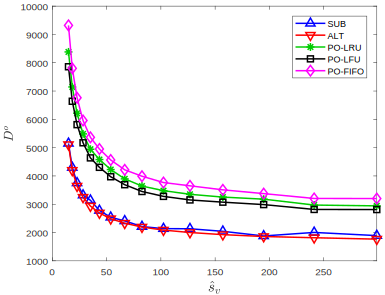
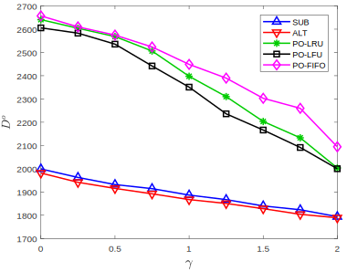

Test
\begin{algorithm}
\caption{Subgradient Projection}
\begin{algorithmic}
\State{Choose $S^{0}$, $Y^{0}$, small scalar $\epsilon > 0$ and let $t=0$ }
\While{$D^t - D^{t-1} > \epsilon \;$}
\State{Compute subgradients $d^t_S, d^t_Y$ by \eqref{subgradient_def}}
\State{Determine step sizes $\xi^t_Y$, $\xi^t_S $ according to \eqref{eq:hetnet_stepsize}}
\State{Compute projected variables ${\bar{Y}}^t$ and $\bar{S}^t $ by \eqref{subgradient_update}}
\State{Update $S^{t+1}$ and $Y^{t+1}$ by \eqref{subgradient_update}}
\State{Let $t = t+1$}
\EndWhile
\State{Let $(Y^{*}_{sub},S^{*}_{sub}) = (Y^{t},S^{t})$}
\State{Perform pipage rounding}.
\end{algorithmic}
\label{alg:hetnet_subgradient_method}
\end{algorithm}Power & Caching in Wireless HetNets
- Delay minimization in multi-hop wireless HetNets via caching and power control (led by Derya Malak)

Power & Caching in Wireless HetNets
- Delay minimization in multi-hop wireless HetNets via caching and power control
- Contributed with:
- Joint convexity analysis of optimization problem
- Projected subgradient method algorithm for finding local minima
- Simulator built in Julia, numerical experiments using said simulator
Power & Caching in Wireless HetNets
Model: Arbitrary multi-hop wireless heterogenous network (HetNet) topology:
- MCs, SCs, and users; MCs and SCs have wireline backhaul connections
- All wireless transmissions share channel, i.e. no interference management
- All nodes can be equipped with caches
- Pre-determined shortest path (in hops) routing
Goal: Minimize delay in network by controlling power and caching allocation
Power & Caching in Wireless HetNets
Optimization: Minimize total delay of user requests:
Wireless link transmission delay dependent on SINR
\[\begin{equation} \text{SINR}_{vu}(S)=\frac{ G_{vu}s_{vu}}{N_u+ \sum\limits_{j\in V\backslash v}G_{ju}\sum\limits_{w}s_{jw}+G_{vu}\sum\limits_{w\neq u}s_{vw}} \end{equation}\] \[\begin{equation} f(\text{SINR}_{vu}(S)) = \frac{1}{\log_2(1+\text{SINR}_{vu}(S))} \end{equation}\]
Power & Caching in Wireless HetNets
Optimization: Minimize total delay of user requests:
Wireless link transmission delay dependent on SINR
Problem is NP-hard due to integer constraints on caching variables
\[\begin{equation} D_{(i,p)}^o(X,S)=\sum\limits_{k=1}^{|p|-1}f(\text{SINR}_{p_{k+1}p_k}(S))\prod\limits_{l=1}^k (1-x_{p_l i}) \end{equation}\] \[\begin{equation} D^o(X,S)=\sum\limits_{(i,p)\in\mathcal{R}}{\lambda_{(i,p)}{D_{(i,p)}^o(X,S)}} \end{equation}\]
Power & Caching in Wireless HetNets
Optimization: Minimize total delay of user requests:
Wireless link transmission delay dependent on SINR
Problem is NP-hard due to integer constraints on caching variables
Convex relaxation on these leads to reduced-complexity formulation (RCF)
\[\begin{equation} D_{(i,p)}(Y,S)={\sum\limits_{k=1}^{|p|-1}f(\text{SINR}_{p_{k+1}p_k}(S)) g_{p_k i}(Y) } \end{equation}\] \[\begin{equation} g_{p_k i}(Y)=1-\min\Big\{1,\sum\limits_{l=1}^k y_{p_l i}\Big\},\,\quad\forall\, y_{p_li}\in [0, 1] \end{equation}\] \[\begin{equation} D(Y,S)=\sum\limits_{(i,p)\in\mathcal{R}}{\lambda_{(i,p)} D_{(i,p)}(Y,S)} \end{equation}\]
Power & Caching in Wireless HetNets
Optimization: Minimize total delay of user requests:
Wireless link transmission delay dependent on SINR
Problem is NP-hard due to integer constraints on caching variables
Convex relaxation on these leads to reduced-complexity formulation (RCF)
\[\begin{equation} D(Y,S)=\sum\limits_{(i,p)\in\mathcal{R}}{\lambda_{(i,p)} D_{(i,p)}(Y,S)} \end{equation}\]RCF is not jointly convex in power and caching
Power & Caching in Wireless HetNets
Use projected subgradient method to solve for local minima in general case
\[\begin{equation} \begin{aligned} & S^{t+1} = S^t + \xi_S^t(\bar{S}^t - S^t) \\ & \bar{S}^t = [S^t - w_S^t d_S^t]^+_{\mathcal{D}_S} \\ & \boldsymbol{y}^{t+1} = \boldsymbol{y}^t + \xi^t_{\boldsymbol{y}}(\boldsymbol{\bar{y}}^t - \boldsymbol{y}^t) \\ & \boldsymbol{\bar{y}}^t = [\boldsymbol{y}^t - w_Y^t d^t_{\boldsymbol{y}}]^+_{\mathcal{D}_{\boldsymbol{y}}} \\ & d_S^t = \nabla_S D(Y^t,S^t), \; d^t_{\boldsymbol{y}} \in \partial_{\boldsymbol{y}}D(Y^t,S^t) \\ & \xi^t_{\boldsymbol{y}} = \frac{D^t - \hat{D}^t}{||d_{\boldsymbol{y}}^t||^2}, \; \xi_S^t = \frac{D^t - \hat{D}^t}{||d_S^t||^2} \end{aligned} \end{equation}\]Projected Subgradient Method
Initialize: Choose \(S^{0}\), \(\boldsymbol{y}^{0}\)
do
- Compute subgradient \(d^t_S, d^t_{\boldsymbol{y}}\)
- Determine step sizes \(\xi^t_{\boldsymbol{y}}\), \(\xi_S^t\)
- Compute projected variables \(\boldsymbol{\bar{y}}^t\), \(\bar{S}^t\)
- Update \(S^{t+1}\) and \(\boldsymbol{y}^{t+1}\)
- Let \(t=t+1\)
while \(D^t - D^{t-1} > \epsilon\)
Let \((\boldsymbol{y}^{*}_{sub},S^{*}_{sub}) = (\boldsymbol{y}^{t},S^{t})\)
Rounding
Power & Caching in Wireless HetNets
Experimental results under different scenarios compare performance against baseline replacement policies paired with cache-unaware power optimization

Power & Caching in Wireless HetNets
Experimental results under different scenarios compare performance against baseline replacement policies paired with cache-unaware power optimization

Power & Caching in Wireless HetNets
Experimental results under different scenarios compare performance against baseline replacement policies paired with cache-unaware power optimization
